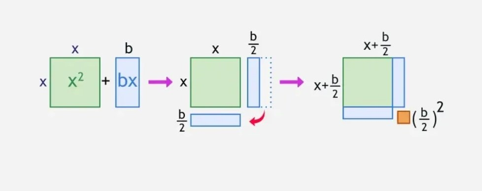

Think about it
Where have you seen a curved, U-shaped arc in real life?
Write down one example — anything around you, in sports, nature, or buildings.
A quadratic equation is any equation that can be written in the form:
\[ax^2 + bx + c = 0\]
where \(a \neq 0\), and \(a\), \(b\), \(c\) are real numbers.
\[ax^2 + bx + c = 0\]
The equation has three parts:
This is my conversation with my previous student by challenging me:
This is my conversation with my previous student by challenging me:
Is \(x^2 + 5x + 6 = 0\) a quadratic equation?
Yes, it is! We have \(a = 1,\ b = 5,\ c = 6\). It fits \(ax^2 + bx + c = 0\) perfectly.
What about \(3x + 5 = 0\)?
No, there’s no \(x^2\) term. In fact, the highest power is 1, not 2, so it belongs to linear equation.
How about \(2x^2 - 3x = 0\)?
Also, yes. \(a = 2,\ b = -3,\ c = 0\).
But how though?
The constant term can BE zero. The rule said \(b\) and \(c\) can be ANY real number.
What about \(x^3 + x^2 = 0\)?
No, the highest power is 3.
That will make it cubic, not quadratic.
Can you challenge me instead?
Gladly!
Is this equation: \(\dfrac{1}{x} + 2 = 0\) quadratic?
I got confused a bit, but I am confident that it’s not quadratic. The variable here is in the denominator.
That’s right. Rational or an inverse equation is what we can call it. A quadratic can never have \(x\) in the denominator.
Thank you, teacher Josh. This helps me identify expressions now.
No biggie. I’m glad I can help.
Always remember: \(a\) must never be zero. If it were, the \(x^2\) term vanishes and the equation is no longer quadratic.
Goal: Rewrite \(ax^2 + bx + c\) as a product of two binomials.
Example:
\[x^2+5x+6=0\]
Step 1
Find two numbers that multiply to \(c = 6\) and add to \(b = 5\):
\[\text{Factors of 6: } (1,6),\ (2,3) \quad \Rightarrow \quad 2 + 3 = 5\]
Step 2
Factor the equation:
\[(x + 2)(x + 3) = 0\]
Step 3
Apply the Zero Product Property:
\[x + 2 = 0 \;\Rightarrow\; x = -2 \qquad x + 3 = 0 \;\Rightarrow\; x = -3\]
Solutions:
\(x = -2\) or \(x = -3\)
Solve by factoring: \(\quad 2x^2 - x - 6 = 0\)
Step 1
We have: \(3\) and \(-4\)
\[\Rightarrow (3) \times (-4) = 12 \quad \text{and} \quad (3) + (-4) = -1 \checkmark\]
Step 2
Divide those 2 factors into \(a=2\), then factor:
Factor:
\[(x + \frac{3}{2})(x - 2) = 0\]
If there’s a fraction in either or both binomials, you multiply that binomial with its denominator:
\[(2x + 3)(x - 4) = 0\]
but we’re solving the equation, so this is not necessary unless being asked to.
Step 3
Apply the Zero Product Property:
\[x + \frac{3}{2} = 0 \;\Rightarrow\; x = -\frac{3}{2} \qquad x - 2 = 0 \;\Rightarrow\; x = 2\]
Solutions:
\(\boxed{x = -\frac{3}{2} \quad \text{or} \quad x = 2}\)
When factoring is difficult, use the Quadratic Formula:
\[x = \frac{-b \pm \sqrt{b^2 - 4ac}}{2a}\]
This formula works for every quadratic equation.
Memory Tip
“Negative b, plus or minus square root, b squared minus 4ac, all over 2a!”
Solve \(2x^2 - x - 6 = 0\)
Identify
\(\quad a = 2,\quad b = -1,\quad c = -6\)
Substitute
\[x = \frac{-(-1) \pm \sqrt{(-1)^2 - 4(2)(-6)}}{2(2)} = \frac{1 \pm \sqrt{49}}{4} = \frac{1 \pm 7}{4}\]
Solving…
\[x = \frac{1 + 7}{4} = \frac{8}{4} = 2 \qquad x = \frac{1 - 7}{4} = -\frac{6}{4} = -\frac{3}{2}\]
Solutions
\[\boxed{x = 2 \quad \text{or} \quad x = -\frac{3}{2}}\]
The part \(b^2 - 4ac\) is the discriminant \((\Delta)\). It helps us predict how many solutions exist.
Two real solutions
The parabola crosses the x-axis twice.
One real solution
The parabola tangents (touches once) the x-axis.
No real solutions
The parabola DOES NOT cross the x-axis.
The idea here is literally “complete the square” for each sides of the equations.

Source: https://media.geeksforgeeks.org/wp-content/uploads/20250214124516755151/Completing-the-square-Method.webp
Transform \(x^2 + 6x + 5 = 0\) into the form \((x + h)^2 = k\).
Step 1
Move the constant:
\[\quad x^2 + 6x = -5\]
Step 2
Add \(\left(\dfrac{6}{2}\right)^2 = 9\) both sides: \[\quad x^2 + 6x + 9 = -5+9 \Rightarrow x^2 + 6x + 9=4\]
Step 3
Simplify the perfect square trinomial into squared binomial factor: \[(x + 3)^2 = 4\]
Step 4
Take square roots both sides: \(\quad x + 3 = \pm 2\)
Step 5
Now solve for each signs: \[x + 3 = - 2 \Rightarrow x=-2-3=-5 \quad x+3=2 \Rightarrow x=2-3=-1\]
Solutions:
\(\boxed{x = -5 \quad \text{or} \quad x = -1}\)
The graph of \(y = ax^2 + bx + c\) is always a parabola.
| Feature | Formula |
|---|---|
| Vertex | \(x = -\dfrac{b}{2a}\) |
| Axis of Symmetry | \(x = -\dfrac{b}{2a}\) |
| Opens Up | when \(a > 0\) |
| Opens Down | when \(a < 0\) |
| y-intercept | \((0, c)\) |
| x-intercepts | solutions of the equation |
There are at least 2 special cases of quadratic equations that can be easily solved.
Suppose \(n\) is any real number.
Perfect Squares
When you detected this type of equation:
\[x^2\pm2nx+n^2=0\]
It is tangential to the x-axis, and you’ll get 2 kinds of solution:
Difference of squares
This has to be the easiest quadratic equation to solve
When you have this given:
\[x^2-n^2=0\]
You can just bring \(n^2\) to the right side, and you’ll get 2 solutions.
\[x= \pm n\]
| Situation | Best Method |
|---|---|
| Easy to factor (small integers) | Factoring |
| \(b = 0\) (e.g. \(x^2 - 16 = 0\)) | Square Root |
| Any quadratic, guaranteed | Quadratic Formula / Completing the Square |